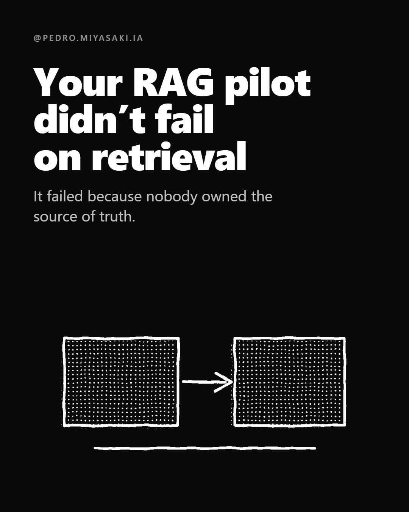
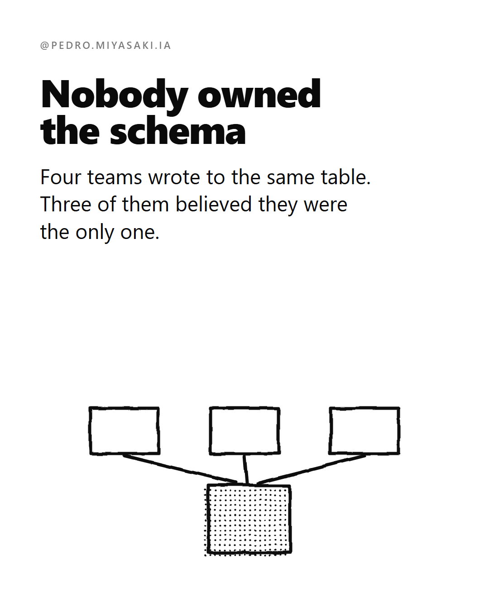
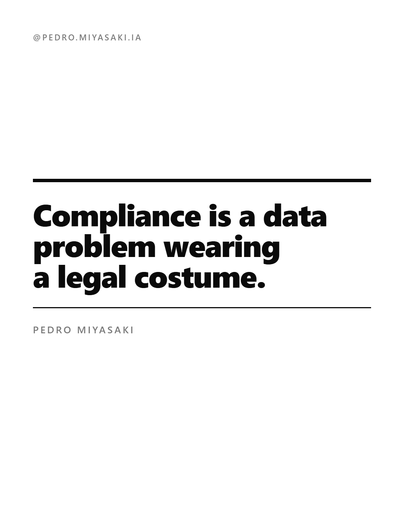
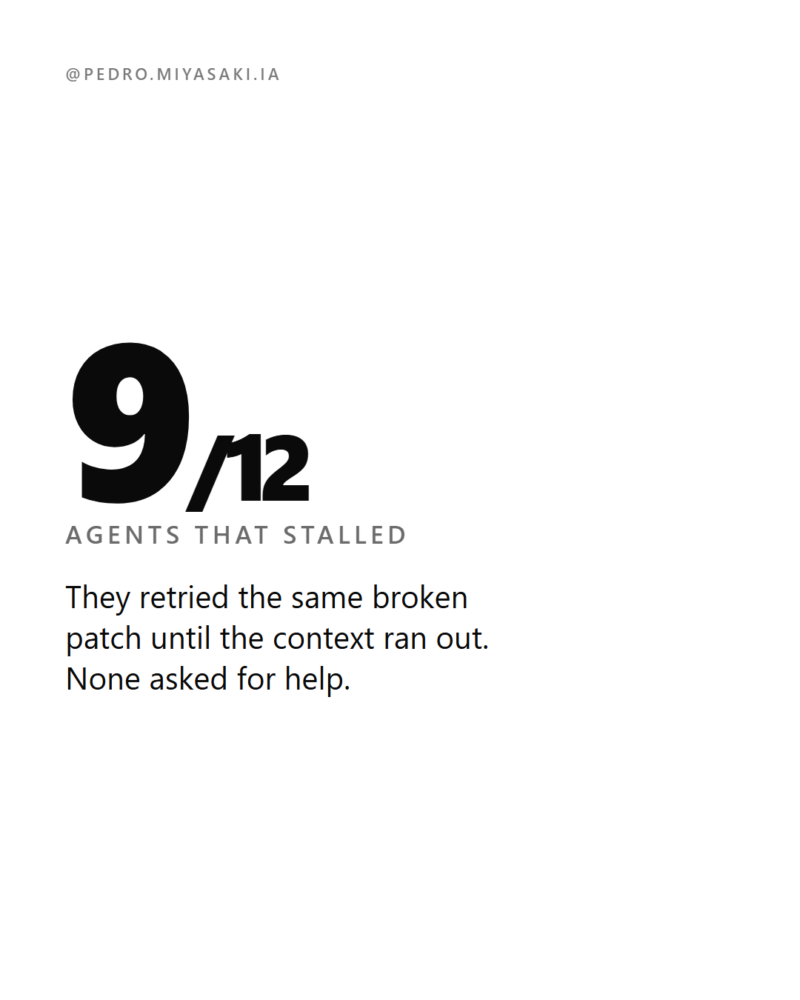
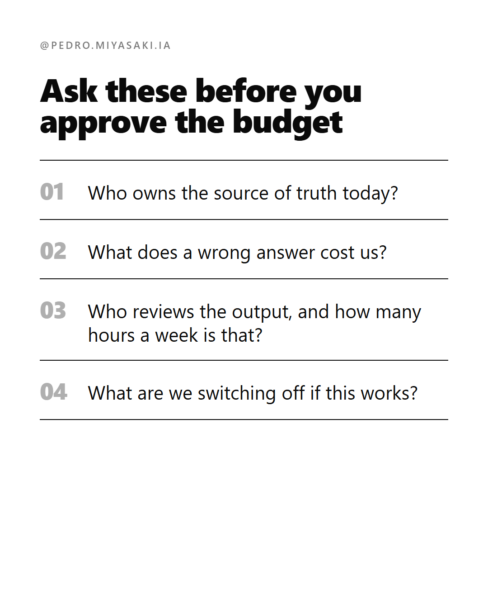
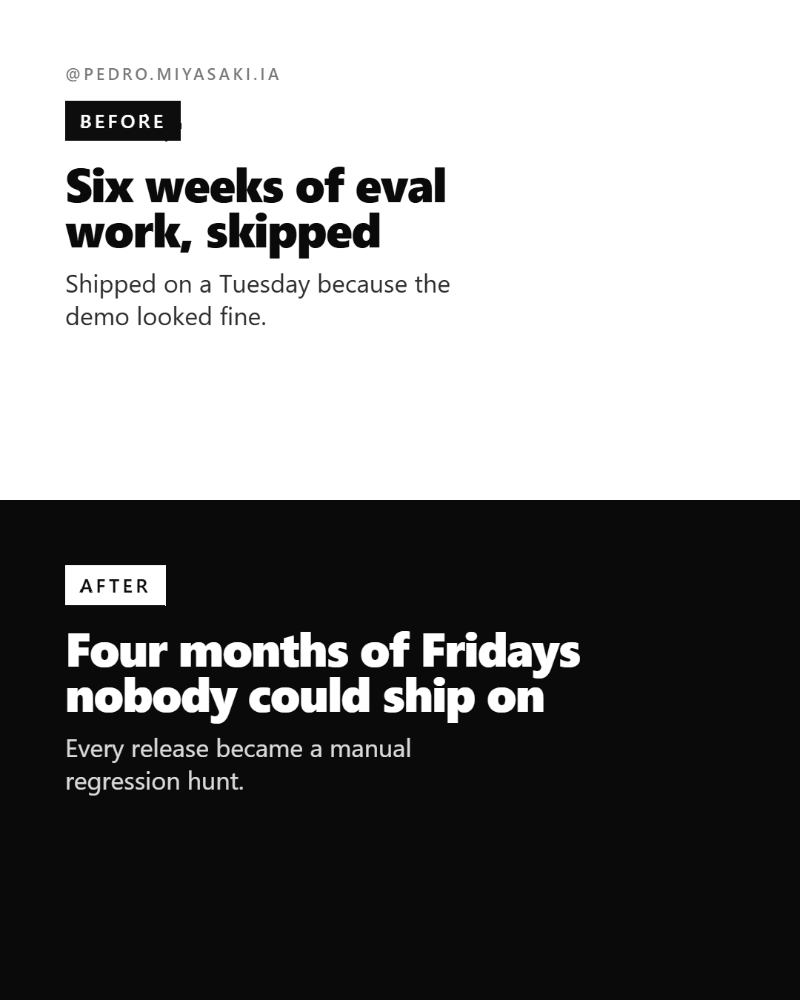
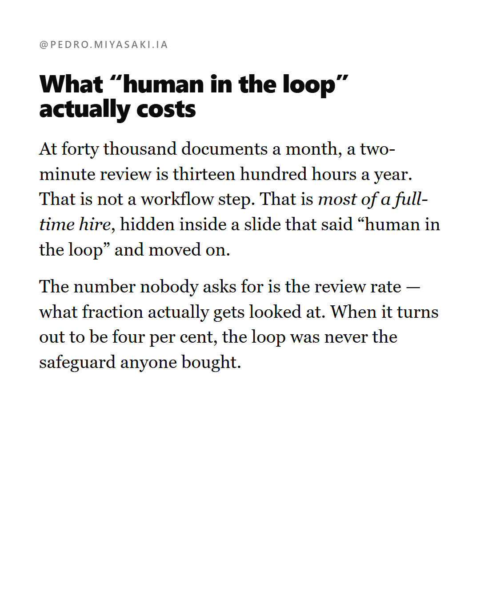
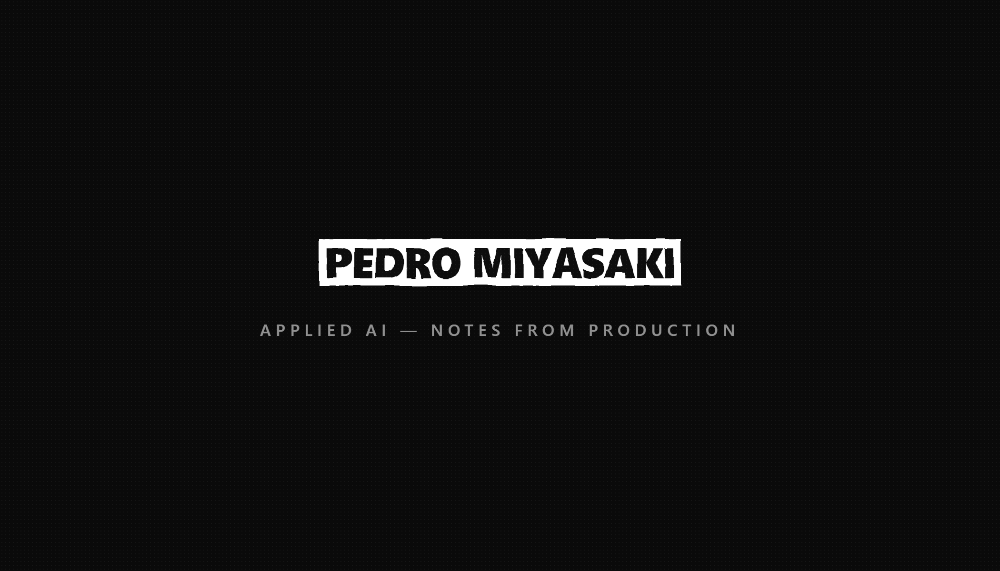
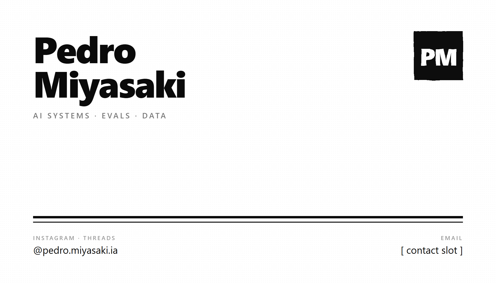
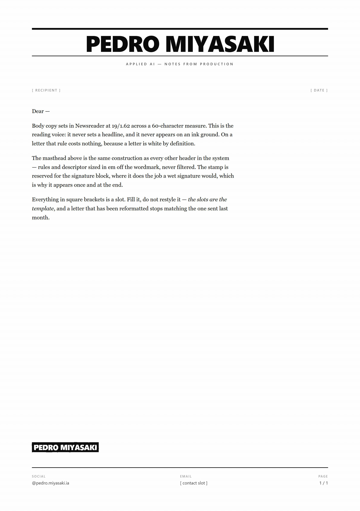

The visual system for everything published under
@pedro.miyasaki.ia. Strictly two values. The dot screen makes every tone in between.
Pedro Miyasaki
Applied AI — notes from production
Contents
What's in here
The idea03
Typography — three voices08
Logotype — the mark04
Typography — the scale09
Logotype — roughness & size05
Colour — two values10
Logotype — secondary mark06
Colour — the halftone ramp11
Logotype — misuse07
Patterns — six devices12
Tone & mood13
Post templates14
Business card15
Letterhead16
Colophon17
The rules live in design/identity.md, which is what the production
skills read. This book is the same system shown rather than described — if the two disagree, the
markdown wins.
03 — The idea
Newspaper, not minimalism
A system with no colour usually means
restraint. This one doesn't. It's a printing idiom: one ink, one paper, and a dot screen
doing the work that ink alone can't.
Every intermediate tone here is
made of black dots on white, exactly the way newsprint has made grey since the 1880s.
Nothing is a tint. Nothing is 50% opacity. The grey you see is a screen, and up close it
resolves into dots.
That single decision cascades. Artwork is drawn geometry torn up by a displacement filter,
so it reads as a plate that shifted on press. The logotype is an inked block with a chewed
edge. Inversion is the only accent, and it means one thing — the frame of the piece.
The tension that makes it work: crude printing against a hard, heavy grotesque. Soft
type with a soft drawing is a different brand entirely, and a gentler one.
The 11px screen at r2.1 — 11.4% coverage. At arm's length it is grey. At
reading distance it is dots. That is the whole system in one square.
04 — Logotype
The mark
The name knocked out of an inked block. The block is not a container the wordmark
sits in — block and letterforms are roughened as one impression, which is why the edge chews and
the counters stay open.
Clear space = 0.30em — the block's own top padding0.30em
Nothing enters 0.30em on any side — the same value as the block's top
padding, so the mark never sits tighter to its neighbours than the wordmark sits to its own
edge. Measured in em of the wordmark.
05 — Logotype
Roughness is a function of size
The displacement is measured in absolute pixels, so one filter cannot serve every
size — scale="7" reads as ink at 900px and as mud at 120px. Three bands, then a clean
cut. Never invent a fourth.
Pedro Miyasaki
≥ 600px · #rough-lg · scale 7 · freq .018
Pedro Miyasaki
300–600px · #rough-md · scale 4 · freq .026
Pedro Miyasaki
120–300px · #rough-sm · scale 2 · freq .042
Pedro Miyasaki
< 120px · no filter · clean edges
Minimum sizes
Stamp wordmark 96px wide — below that the badge takes over. Badge 24px. That is the favicon floor.
Baked, not live
The impression is applied at render size and exported. Never scale a rendered PNG of the mark — re-render it at the target size so the band is right.
06 — Logotype
Secondary mark & masthead
The badge is the stamp cut down to the initials — same block, same impression, one
altitude lower. It is the avatar, the favicon and the video bug. The masthead is a different job:
it heads a page, it is not a mark.
Badge · 128 / 72 / 40 / 24
PM
PM
PM
PM
PM
PM
PM
PM
Same roughness bands as the stamp. Inverted pair for dark grounds.
Masthead
Pedro Miyasaki
Applied AI — notes from production
Rules and descriptor are em-based off the wordmark:
top .048em · bottom .014em · descriptor .115em at .34em tracking.
Drops below a 96px wordmark, where it would render under 11px. Never filtered — the masthead
is set, not printed.
07 — Logotype
Five ways to break it
Each of these has a specific failure behind it, not a preference.
Pedro Miyasaki
Never stretch. The impression is directional — scaling one axis shears the grain.
Pedro Miyasaki
Never re-set in another face. Inter is the body voice, not the mark.
Pedro Miyasaki
Never filter twice. Compounded displacement collapses the counters.
Pedro Miyasaki
Never on a mid-tone. The chewed edge needs full contrast to read as ink.
PM
Pedro Miyasaki
Never both at once. Badge and stamp are one mark at two altitudes.
08 — Typography
Three voices, one job each
Two families were the rule while the system only had to shout. Long text needs a
third, and it is strictly a reading face — it never sets a headline.
Recognition
Nobody applied for any of this
Bricolage Grotesque 800 · -.025em · line-height .94 — hooks, headlines, the logotype. Never below 40px.
Support
Five reels and three posts a week, out of five recordings.
Inter 400/500 · body under a headline, the handle mark, labels, captions, every UI-adjacent surface.
Reading
The eval suite you skipped is the reason your team can't ship on Fridays.
Newsreader 400 + italic · dense slides, long-form, anything over four lines. White ground only.
Newsreader carries an optical-size axis, so it is set for its size rather than
scaled to it — the same argument as the roughness bands. On black it goes thin and dirty at any
size, which is why reading mode is white-only.
09 — Typography
The scale
Sizes are for the 1080 × 1350 slide canvas at an 88px margin. Other canvases scale
proportionally from the cover hook.
Level
Face
Size
Cover hook
Bricolage 800
104px
Slide headline
Bricolage 800
86px
CTA — centred
Bricolage 800
118px
Body under a headline
Inter 400
46 / 1.32 · 30ch
Reading mode
Newsreader 400
40 / 1.42 · 38ch
Eyebrow / label
Inter 500 · .18em
22px
Handle mark
Inter 500 · .18em
22px
Measure is the real constraint
Body caps at 30ch, reading mode at 38ch. A serif tolerates a
longer line than a grotesque at the same size, which is most of why it exists here.
Two sizes on a slide, never three. If a slide seems to need a third level, it is two slides.
The gap between 46px body and 86px headline is deliberate and large. Anything landing between
them reads as indecision.
10 — Colour
Two values, and that is the whole palette
There is no accent colour and there will not be one. Inversion is the accent, and
it carries exactly one meaning: the frame of a piece. Cover and CTA are black; everything between
is white.
Paper
#FFFFFF rgb(255 255 255)
Ink
#0A0A0A rgb(10 10 10)
Why #0A0A0A and not #000000
Pure black against pure white vibrates at large areas, and on an OLED phone
— where most of this gets seen — true black smears on scroll because those pixels are switched
off entirely. #0A0A0A reads as black, holds its edge while moving, and behaves like ink
on paper rather than a hole in the screen.
Contrast is 19.8:1, roughly two and a half times the AAA floor. Nothing in this system
can fail a contrast check, which is what buys the freedom to have no palette at all.
Video: use the same #0A0A0A for Reel grounds. True black bands under H.264 and the paper
grain doubles as dither — keep it on, at .05, in exported frames.
11 — Colour
Grey is a screen, never a tint
Every intermediate tone is dots. Four densities on the same 11px grid — pick one,
do not interpolate, and never reach for opacity or a hex grey to get there.
Whisper · r 1.4 · 5.6% Grain over a full bleed
Screen · r 2.1 · 11.4% The default. Artwork fill.
Shadow · r 3.0 · 23.3% Weight inside a drawing
Solid-ish · r 3.9 · 39.4% Reads as dark, still dots
Ink · 100% Flat. No screen.
The dot inverts to white on ink grounds — same radii, same grid.
Never place a screen on a screen. Two overlapping grids moiré on export and the artefact
survives compression far better than the artwork does.
12 — Patterns
Six devices
The filter and the screen are technique. These are the things you actually place on
a page — a closed set, so pieces made months apart still look related.
01 · Field
The screen at full bleed. Turns a slide into a printed ground.
02 · Rule set
Heavy over thin, from the masthead. Every divider in the system.
03 · Tally
Counting marks for anything measured in weeks or reps.
04 · Grain
4px radial at .05, in currentColor so it survives inversion. Always on.
05 · Torn band
A rectangle through #rough-lg. Section breaks and pull quotes.
Applied AI
06 · Block label
The logotype's block, reused at label scale. Eyebrows and tags only.
Six is the whole vocabulary. A seventh device is a
decision about the system, not about the piece in front of you — so it goes in
identity.md or it does not get used.
None of them may be combined with a screen underneath. See page 11.
13 — Tone & mood
How it should feel
The written voice lives in docs/voice/base.md.
This is the visual half — and the two have to agree, because a hedge-free sentence set in a soft
typeface is still a hedge.
Printednot rendered. It should look like it came off a press, not out of a design tool.
Loudnot busy. One idea per surface, said at full volume. Silence around it.
Bluntnot aggressive. The edge comes from contrast and specificity, never from shouting.
Authorednot templated. Every piece should look like a person made this one, not filled a preset.
Never, under any brief
Gradients Drop shadows Rounded corners Stock photography A second colour Emoji in artwork Soft or rounded type Grey as a hex value Centred body copy Glassmorphism
The reference is a broadsheet on cheap paper, not a gallery
poster. Cheap paper is the point — it allows the misregistration, the chewed edge and the visible
screen, all of which read as evidence that something physical happened.
14 — Templates
Eight archetypes

01 CoverInverted. Hook + art.

02 StatementHeadline, body, art.

03 QuoteRule set, no art.

04 DataOne figure, one claim.

05 ListRuled items, max five.

06 SplitInversion carries the turn.

07 ReadingNewsreader. White only.08 CTAInverted. Closes every set.
Archetype
Reach for it when
Fixed
Quote
The line is the whole point and art would dilute it
Rules above and below. Attribution in Inter.
Data
One number does the persuading — never two
Figure at 300px. Context caps at 26ch.
List
Questions or checks the reader will screenshot
Max five. Rules between, never bullets.
Split
A before/after where inversion carries the turn
Equal halves. Block label on each.
Reading
The argument needs more than four lines
Newsreader 40/1.42 at 38ch. White ground.
Source: design/templates/slides.html at --width 1080 --height 1350.
The handle mark is on every archetype without exception; the logotype is on none of them.
15 — Stationery
Business card
Digital only — no bleed, no trim marks, no crop allowance. 1050 × 600 at 300dpi,
which is a 3.5 × 2in card if it ever does get printed.

Front — stamp, inverted

Back — masthead logic, details
Stamp on the front, badge on the back. That is not a breach of the
one-mark-at-a-time rule on page 07 — they are two surfaces, never in the same field of view.
The email is a slot on purpose. Whether a personal address goes on a card handed out at a
keynote is your call, not the system's.
16 — Stationery
Letterhead

A4 · 1240 × 1754 at 150dpi
The masthead runs centred at the head — the only
place in the system where anything is centred, because that is what a masthead is.
Body sets in Newsreader 19/1.62 at 60ch. This is the one document where reading mode
is the default rather than the exception, and the white-ground rule costs nothing on a
letter.
The stamp appears once, in the signature block, doing the job a wet signature would.
That single use is why the mark needs a small size band at all.
Everything in square brackets is a slot. Fill them; do not restyle them — a letter that has
been reformatted stops matching the one sent last month.
17 — Colophon
Where all of this lives
Files
design/identity.md — the rules, in the form the production skills read. Canonical.
If this book and that file ever disagree, the file wins.
design/brandbook/book.html — this document. design/logotype/ — the routes explored, and the mark spec. design/templates/slides.html — the eight archetypes. design/stationery/stationery.html — card and letterhead. docs/voice/base.md — the written half of the voice.
Re-rendering anything
Every surface in this book is HTML put through one
script. Nothing was drawn in a design tool and nothing needs to be.
uv run python scripts/render_html_to_pngs.py --html <file>
--out <dir> --selector <sel> --width W --height H
Because the impression is baked at render size, re-render at the size you need rather than
scaling something already exported. See page 05.